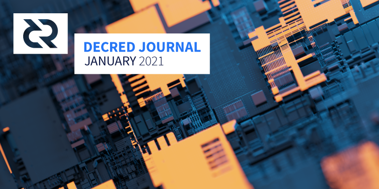

Decred月报 – 2021年1月

图片: @saender
生日快乐, Decred!
经过五年不的开发和努力，权力的下放更近一步：
- v1.6已发布，请查看下面的“隐藏的九头蛇”部分了解更多详细信息。
- 选票价格和权益证明的参与度持续上升，创下新高。
- 一月份的Politeia提案投票记录打破了纪录，二月份又一次打破了纪录，一路攀升至70％！
- DCRDEX第二阶段的开发提案高票通过，Decred in Depth和Decred Arabia团队的提案也获得了批准。
- Journal finally终于有了自己的Politeia提案（与初级合作伙伴Politeia Digest共享），该提案将确保在2021年获得资金支持，并且已经在投票中。
隐藏的九头蛇在这里！
期待已久的v1.6(隐藏的九头蛇)终于来了！这可能是Decred历史上最大的一次升级，其中包括所有软件项目中的几次巨大和多次小型升级。所有升级都列在详细的发行说明文件中，因此在这里我们仅介绍重点升级：
-
现在可以通过Decrediton图形用户界面钱包访问匿名交易。它的工作原理是混合硬币，使其很难追踪并监视您的余额或活动。此功能对于保护常规用户尤其是投票人的隐私至关重要，投票人隐私提高会增强整个网络的安全性。它还保护了Decred宪法中的可替代性原则。所选择的实现（StakeShuffle）具有使硬币供应始终处于可审计状态的优美特性，它依靠简单的密码学并由于与Staking系统的智能集成和巨大混合集从而实现了高度隐私性。
-
新的VSP架构极大地改善了使用投票服务提供商(VSP)的体验，非solo投票的选民几乎都使用了投票服务提供商。无需创建和记住帐户，无需备份脚本，无需共享电子邮件，无需重复使用地址以及可选的混合支持-所有这些都使购买选票变得更加轻松和隐秘。
-
去中心化的国库控制权提案将批准或拒绝国库支出的权力转移到Decred利益相关者手中。所需的共识更改将在未来几个月内投票表决，并在获得批准后激活。
-
DCRDEX带来了安全，私密和公平的硬币交换以及完全掌控私钥。隐私信息将以最佳方式受到保护-不收集。伪随机定单匹配，可以防止不良行为，例如高频交易，抢先交易，定单欺骗和虚假交易量。而且交易不收取任何交易费用。
以下是升级的重要提示：
- 请查看新发行页面以了解新功能和下载链接的概述，或观看视频概述 (v1.6功能从21:00开始）
- 验证下载_(过程虽然无趣，但是可以确保文件没有被篡改！)_
- 阅读发行说明并注意降级警告 - 升级区块链和钱包文件后将无法使用以前的版本 -
- 了解@Exitus的有关混合硬币的操作视频
- 通过从下拉列表和选票数量中选择VSP，在Decrediton内以vspd方式购买选票，并将其保持打开状态，直到进行交易并支付VSP费用（最多可能需要20分钟）。如果您在故障单上看到“错误”，请重新同步以修复故障，可在故障单状态选项卡中找到它。
- 为即将到来的共识规则更改投票设置偏好，以启用去中心化的国库。要了解其工作原理，请阅读有关提案，以及有关最新技术细节的DCP(Decred共识修改提案)。如果您不熟悉Decred治理，请参阅@Checkmate的快速参与治理演练视频。
- 在这里或这里观察网络的升级和共识投票进度
- 当前正在使用DCRDEX的用户需要掌握一些计算机技术，但是在下一版本中将对此进行简化。当然，您也可以通过@richardred的指南学到更多。
在Decrediton v1.6.0中购买选票存在一些已知问题，这些问题将在即将发布的补丁程序版本中修复。
开发进展总结
除非另有说明，否则此处报告的工作仅限为“合并到主核心存储库”状态。这意味着这项工作已经完成、审查并集成到高级用户可以构建和运行的源代码中，但对于普通用户来说，还不能使用。
一月份对dcrd的更新就是一个很好的例子，从源代码构建的用户今天可以得到无需等待新版本。
本月的主要工作是准备，审查和测试针对多对等节点下载数据的几项重大更改，这些更改通常对于简化代码和解锁未来的优化非常有用：
- 完全重新设计了区块索引和处理，以使用区块头优先的语义并支持区块数据的乱序处理
- 重新设计了UTXO处理
- 同步模型重新设计。较小的180字节块头将在任何块数据之前下载，然后仅下载所需的块。这优化了流量，消除了“孤立块”的概念，并为将来的增强打开了大门。
- 实施UTXO缓存的准备
其它变化：
- 完整版DCP-0006文件，描述了即将到来的去中心化国库共识变更的技术细节
- 增加3个新的HTTPS，以减少依赖decred.org域
- 弃用的版本1 cfilters被删除有利于更有效的V2的（“紧凑型过滤器”功率Decred的真棒SPV高科技轻客户端）
- 使用客户端证书添加了TLS客户端身份验证（比用户密码更灵活）
- 向gencerts工具添加了RSA 4096位密钥支持
- 新命令可使任意块无效并重新考虑任意块以进行验证（将来可以更轻松地进行测试并更顺利地进行升级）
- 防止重复的挂起连接到相同的IP地址和端口
- 测试代码，日志记录，文档，依赖项，次要修复程序等的各种更新
合并了来自10个贡献者的47个PR ，添加了12K并删除了7K行代码。
进行中：
- 引入按块龄划分的布隆过滤器以显着减少用于跟踪已知其他对等方拥有哪些数据的内存
- 重写了VSP客户端，以改善后台处理并支持种子还原后恢复费用支付信息
上述更改也已反向移植到v1.6版本中。
- 新页面显示未使用的输出（UTXO）列表
- 以随机顺序显示VSP
- 在启动，重新启动和种子还原时更新故障单状态
- 与Politeia通信时删除了CSRF令牌的用法，以防止隐私泄漏
- 自动检测钱包过去是否使用过混币
- RFP提案和提交的UI提示
- 更新翻译
- Trezor支持的一些更新
- 更自动化的UI测试
- 约24个bug修复和3个UI调整
以上大多数更改都包含在v1.6版本中，其余更改将包含在v1.6.1修补程序版本中。
CMS:
- 强制发送选票的母交易，这会减少选票广播错误
- 更新依赖项
vspd版本 1.0.0现在已标记，所有VSP操作员都应升级其主网部署。
VSP操作员仅应在生产中运行带标签的发行版（到现在为止，vspd仍在开发中，而操作员仅部署在最新的主版本）。
- 配置处理，错误和HTTP重定向的各种改进
进行中：
- 支持反向代理部署
- NiceHash支持
- 关闭修复程序和依赖项更新
一月份的三个关键主题是修复v0.1.4补丁程序（它是v1.6版本的一部分）的剩余问题，继续朝着下一个v0.2里程碑进行开发，并管理下一开发阶段的提案。
合并的工作：
- 允许用户导出和导入帐户数据（主要是私钥）
- 支持从未加密的钱包切换到加密的BTC钱包
- 客户端费用费率限制
- 样本配置文件
- 时间验证最高费用率，以部分防止服务器恶意分配过高的费用
- 修复了地址验证，钱包锁定，登录等方面的几个问题，并将它们反向移植到v0.1.4版本中
合并了来自7个贡献者的32个PR ，添加了3K并删除了1K行代码。
检查第二个提案，以了解未来9个月将要发生的事情。此外，此推文暗示可能在交易的DCR端集成隐私。
恭喜DCRDEX团队获得惊人的98％的赞成票！
- 最初的StakeShuffle支持：启用后，将禁用为混合帐户生成接收地址和从更改帐户发送资金的功能
- 隐私界面页面：简介，帮助弹出窗口，未混合余额的显示，CSPP服务器详细信息，混合进度等
- proposals提案支持：查看提案列表及其投票状态，打开特定提案并接收有关新提案的通知，投票开始和结束
- 调试页面以查看有关已连接对等节点的详细信息
- 从启动屏幕创建仅观察钱包的选项
- 有关选票表决和返还交易的更具体的通知
为了启用上述功能，在dcrlibwallet基础库中添加了混币和Politeia支持，并且现在可以由dcrios和godcr重用。
- 通知cfilters获取进度
- 已实现的StakeShuffle混币用户界面和设置
- 添加了应用程序设置和钱包设置页面
- 用于签名消息和验证消息页面的新UI
- 页面上的标题更新，以获得更好的用户体验
- 用于覆盖小部件的API已添加到Gio库，并已用于实现“钱包”页面上的预期UI设计和行为
- 更新以匹配Rosetta spec v1.4.8，该规范要求跟踪帐户未使用的硬币
- 消除了运行客户端JavaScript来呈现数学值和公式的需求，更改为使用纯HTML和CSS呈现它们，并消除了9MB的MathJax内容（感谢@jholdstock <3）
- v1.6版本的部分更新（接下来将介绍隐私和LN）
版本1.06已发布，具有新的数据库结构和选票监视功能。可以在Google Play上找到，也可以在GitHub上直接下载APK 。
1月20日的更新：
- Decrediton集成正在等待审查，它将使选票更易于加载到应用程序中
- F-Droid版本正在研究中
- 选择了Blue Oak许可，但可能会更改以适合F-Droid的要求
- 紧凑型过滤器支持正在进行中，但需要大量工作（这是获取地址信息的最隐私保护方式，与SPV钱包所使用的方式相同）
其它
人员
欢迎新到来的首次贡献者，他们的代码已合并到主代码库中： @lolandhold (dcrd), @brunaazambuja (pi-ui), @hamurabiaraujo (pi-ui)!
截至2月1日的社区统计数据：
- Twitter 粉丝: 41,801 (+481)
- Reddit 订阅: 10,201 (+150)
- Matrix #general 用户: 344 (+57)
- Discord 用户: 1,917 (+194)
- Telegram 用户: 2,428 (+90)
- YouTube订阅: 4,320 (+20), views: 169K (+4K)
- LinkedIn粉丝: 962 (+18)
- GitHub dcrd 星: 575 (+5), 叉: 249 (+2)
在跟踪的帐户中发现异常的更改：
- @decredproject Twitter的追随者人数在之前的+400之后增加了近500（在1.5年的时间里几乎没有变化）
- Matrix聊天的用户增加了20％，Discord的用户增加了11％
- 经过6个月的下滑后，Telegram扭转了局面，用户数量增加了4％
- DecredTrading Telegram又获得了+ 26％
- CoinMarketCap 项目页面以某种方式增加了+ 8K观察者（+ 45％）
- @Checkmate 有+ 13％的关注者（至4K）并连续第三个月发布了1K条推文（〜34 /天）
- 长时间不活动后，俄语VK页面再次发布更新，谢谢新的维护者
治理
一月国库收到11878 DCR，花费6750 DCR。按照9月份的每日平均DCR/USD汇率54.25美元计算，这是64.4万美元的收入和36.6万美元的支出。按12月平均汇率31.07美元计算，当月完成工程的美元账单金额为21万美元。截至2月10日，社区开发基金余额为647942 DCR（6430万美元，99.26美元）。
一月份提交了四个提案，它们都已完成投票：
-
DCRDEX第2阶段开发提案在票务支持方面创造了新记录，有53％的合格票证几乎是肯定的（98.2％）！该提案批准了245,000美元的预算，以开发一套功能，包括支持SPV钱包，ETH和ERC-20令牌交易，更多的比特币分叉以及Decrediton集成。
-
在@elima_iii的提案被批准以86.3％的批准和28％的投票率获得批准之后，Decde in Depth播客将受到新的管理，并将继续进行直播-涵盖24-36集，每集$500。
-
@ammarooni提出的一项新研究提案要求$ 17,500编写和出版一本书，《分散的信用：货币和国家的数字化》 -该提案在2月初被勉强否决，获得了57％的批准和70％的投票率。
-
Decred Arabia团队要求为期6个月的融资6,200美元。该提案于2月初获得批准，支持率为96％，投票率达到55％，成为投票率第二高的提案（在DCRDEX第二阶段提案之前，该提案已从新的记录制定者升至几周的第三名） ）。
选票价格的飙升和PoS的参与似乎也导致持票者对Politeia的参与程度提高。
2月初又提交了两项提案，分别是Decred Journal 2021（最高预算39,000美元）和《Open Source Research 2021》（最高预算40,000美元）。Decred Journal提案提供了一个机会，可以留下比平时更多的正式且不变的反馈，并且您也可以（如果有选票）投票以继续资助Journal！
@ buck54321为Decred Eco（GUI应用程序管理器）起草了一份提案，该GUI应用程序管理器无需触摸命令行即可安装，配置和更新越来越多的Decred相关软件列表（像Steam）。
@Checkmate和@pavel阐明了checkonchain.com提案的状态：该项目仍然存在，有时间时开发会继续进行，并且不会被checkonchain.com取代。所有已知的提案更新均已在此处收集。
Politeia摘要发行了第40期，也涵盖了12月的提案。
网络
全网算力: 1月哈希率 以 348 Ph/s开启并以 406 Ph/s结束。月内，最低为 283 Ph/s，峰值为545 Ph/s。哈希率分布 截至2月1日：UUPool 33%, Poolin 29%, Antpool 18%, easy2mine 9.4%, F2Pool 5.2%, BTC.com 2%, Huobipool 1.9%, Luxor 1.1%, CoinMine 0.04%。
Staking: 30天的平均票价为173.23 DCR（+9.3）。价格149.9-212.3 DCR之间变化。锁定金额为6.55-7,120万DCR，相当于参与PoS占 可用供应量的52.53-56.71％。
我们本月的选票价格为212.28 DCR，Staking参与率为56.71％，再次创下新高！
节点：整个1月，每个dcr.farm平均有116个公共侦听节点，总共235个节点。1月的平均版本分布22％dcrd v1.5.2、14％dcrd v1.6.0、13％dcrd v1.6开发人员和RC内部版本，13％dcrd v1.5.1、4％dcrd v1.7开发人员内部版本，3.6％dcrd v1.5.0、2.3％dcrd v1.5开发和RC版本，0.4％dcrd v1.4、10％dcrwallet v1.5.1、7％dcrwallet v1.6.0、1％dcrwallet v1.6开发和RC版本，1％dcrwallet v1.5，0.6％dcrwallet v1.4，其他8％。
截至2月10日，去中心化国库共识变更的PoS升级阈值已达到，PoW达到50％。
截至2月1日，Decred的闪电网络拥有28个节点（+4），47个通道（+5），总容量为8.3 DCR（-0.4），@ jholdstock的网络图已移至新域。随着更多的LN功能通过Decrediton GUI向最终用户公开，LN容量变得越来越重要。感谢所有LN操作员运行这些节点！
@richardred在他的第二份区块链分析报告中，追踪了新开采的硬币如何流经矿池，矿工并最终到达交易所地址。该报告更新了工具开发的进度，并共享了地址/交易集群和资金流的可视化。该报告的主要重点是获得Coinbase最多的5个集群DCR在2019-2020年，以及从这些交易中获得最多DCR的5家公司。这些集群被认为代表了矿池及其用户，但是对它们的结构进行检查后发现其功能存在差异，其中有些似乎属于个人。可以粗略估算出在此期间开采DCR的不同个人/钱包的数量，总共有4,852个不同的集群（每个集群有多个地址）。
整合
dcr.farm在新的子域vsp.dcr.farm上增加了对vspd的支持。2月初，decredvoting.com和dcrpool.ibitlin.com也升级为支持vspd。ibitlin另外提供了一个Telegram机器人来汇报选票状态。
无响应的VSP decred.everstake.one和dcrpos.megapool.info已从列表中删除。
截至撰写本文时，17个VSP中有10个已升级到vspd。VSP运营商请注意，Decrediton v1.6的用户将看到新的vspd实例列表作为推荐选项，这意味着较早升级的VSP可能会从较慢的VSP中窃取一些用户！
巴西Monnos宣布，添加了DCR到他们的投资组合。该平台允许交易BRL法定货币的加密货币，其他交易者的复制策略以及计划发行加密货币支付卡的计划。在撰写本文时，DCR存款尚不可用，但可以进行购买，交易和提款。
Nigerian First Kudi宣布DCR已添加到其新的First Kudi Pro平台中，该平台允许将加密货币交易到NGN法定货币和USDT / GUSD稳定币。
从v1.6发布大约12小时开始，Binance长达30多个小时停止了DCR存款和提款。
警告：Decred Journal的作者不了解上述任何服务的可信赖性。在将您的个人信息或资产信任给任何实体之前，请先进行自己的研究。
采用
风险投资公司Inflection用DCR作为资产之一完成了他们的 第二只基金。他们的主页将Decred定义为“ 网络国家和治理平台”。
外展
Monde PR1月份的成就：
- 创建/编写2个故事以资助和加密出版物
- 回应了3条评论请求
- 获得3次媒体采访
Monde PR保证的新闻报道：
- Cointelegraph中的一篇文章，重点介绍了@ jy-p对CBDC收购的影响的评论（与25个新闻媒体（包括Investing.com和Cointelegraph Brazil）联合发布）。这些评论还用于Cointelegraph（联合9个新闻媒体），World Stock Market和Etherdesk的3个后续新闻报道中。
- Decred v1.6版本涵盖在比特币交易指南，加密模式（与Crypto News BTC联合），8btc，Explica，加密简报（与6个新闻机构包括Techtelegraph联合）和Invezz（与4个新闻机构包括CCNC联合）中。
- Modern Consensus中的一篇文章，重点介绍@ jy-p对GameStop / Robinhood事件的评论
活动
参加:
- 1月22日 - Gate.io AMA - 互联网。@elian在其Telegram频道中回答了Gate.io西班牙社区中有关Decred的问题。大约有25人参加了问答环节，并有机会赢得10美元的DCR（总计50美元）。
媒体
@kyleFirethought和EETER取得Decred LottieFiles'杰出贡献者上传203个动画在2020年 Lottie是Decred设计者使用的动画系统。
精选文章：
- Decred区块链分析-第2部分PoW @richardred(blockcommons.red)
- Crypto Commons 2020审查和v1.0更改日志 @richardred (blockcommons.red)
cryptocommons.cc到涵盖从2020年选择发展的每一次重大更新，而这些也被编写成在年度审查的风格独立的博客文章。这个想法是，已经阅读了Crypto Commons上的Peer Production的人们可以获取更新，而无需再次阅读全部内容。虽然整个帖子长18,000个字，但还有一条推文主题版本要短得多。相关外部部分的普通读者会发现很多相同的故事。更新的主要主题之一是“开源运动”的分歧，在从事更多由公司主导的项目的人们中，幻灭感明显增加。这与加密货币领域形成对比，在加密货币领域，开源项目的数量以及针对这些项目的资金机制在规模和多样性上都在增长。尽管对许多项目而言，熊市都很艰难，并且看到他们的努力缩减了规模，但其他项目却得以继续进行，而无需进行任何照顾，而且仍在不断尝试新的资助计划。
视频:
- Decred双周报，2021年1月24日-1.6即将发布，Decred Eco，指标高点，提案，新内容！@Exitus (youtube)
- Staked 播客 - 窥探加密文化 (youtube)
- Decred coin analysis - 隧道尽头的灯光；隐藏的九头蛇！DubDigital (youtube)
- Decred DEX - 更好的DEX设计？与Jake Yocom-Piatt和Nick Gregory Coinscrum (youtube, slightly shorter version was reuploaded in Feb)
- Decred治理 链上分析师Checkmate (youtube)
艺术：
翻译：
- Iterating privacy - 西班牙语 @francov_
- The Decred structure - 西班牙语 @francov_
- 2020年12月的Decred Journal被翻译为阿拉伯文（@ arij，@ abdulrahman4），中文（@Dominic）和西班牙文（@francov_）。谢谢大家的坚持！
其它非英语内容：
- v1.6版本在西班牙语的Cointelegraph中进行了介绍
社区讨论
通讯系统新闻：
- Element应用（Decred社区使用的Matrix聊天协议的Android客户端）已暂时从Google Play商店中删除。F-Droid版本不易受到此类事件的影响。
- Signal用户可以通过安装特殊的表情包来表达对Stakey的热爱
精选Reddit帖子：
- 大型控股公司MetLife发布的有关央行发行的稳定币的报告中提到了Decred
- Dash的营销费用与Decred的相比如何
- “如果您可以更改Decred的工作方式中的一件事，那将是什么？”
- Politeia的未来会是什么样
- Decred使用哪种编程语言
- 还有另一个“任何人都可以对代码更改进行投票是否危险？” 问题收集了很多详尽的答案
- 其他一些反复出现的话题也浮出水面：将Decred变成DeFi，命名子DCR 单位单位，这不可避免地成为了本月评论最多的话题
精选Twitter讨论：
热爱DCR的人真的很喜欢它：) DCRDEX在残酷的熊市之后是一个重要的基础和市场结构催化剂。
现在人们在不断积累DCR和选票席位。 (@cburniske)
市场
1月DCR交易价格在39.80-69.00美元 BTC在 0.0013-0.0020之间。每日平均汇率是$ 54.25。
@Checkmate制作的彩色图表显示了DCR如何在跟随BTC下跌时没有跟随5个更大的硬币，甚至获得了一些收益。
@Checkmate和@PermabullNino在“我们的网络”通讯第56期中更新的内容突显了有史以来DCR流入国库最多的情况，DCR / BTC价格翻了一番。抵押DCR的价格指标显示，所有抵押中只有17％发生在40美元以上，这表明抵押者以美元计算的利润是合理的。利益相关者的DCR / BTC盈亏平衡水平估计约为0.004 BTC，高于该水平，所有利益相关者的约60％将获利。
DCRDEX自推出以来4个月共交易了130万DCR和1900BTC。平均每24小时大约需要12K DCR / 17 BTC。
相关外部信息
比特币核心0.21.0已发布，主要亮点包括实现为软叉的Taproot共识规则（允许更灵活的智能合约和更好的隐私），并支持服务BIP157紧凑型过滤器。后者提出的2017年5月，并提供了很大的改善，以安全和光钱包隐私，比较流行的琥珀金，并钱包依托中心服务器，而无需验证全blockchain来获取数据。2018年十二月琥珀金中间件的风险物化和BTC约$ 4M价值被窃取黑客。一个不太明显的问题是直到今天仍由约90台Electrum服务器收集私有地址和交易数据。
基于紧凑型过滤器的轻型钱包无需中间人就能与完整节点通信，并且没有这些风险。Decred在2018年9月增加了最初的支持，并在2019年2月向所有用户开放。这项技术的第二代产品于2020年5月以共识级别被添加，并于2021年1月整合到钱包中。
美国矿工马拉松专利集团（Marathon Patent Group）加入了DMG区块链解决方案，创建了“合作采矿池”。为了使该行业受益，该池将包括“清洁区块采矿”专有技术，该技术将“专门省略Walletscore认为有风险且可能不符合OFAC标准的任何交易”。r / Bitcoin讨论了公司可能采取的对策和主张。
Firo（以前的Zcoin）遭受了51％的攻击，攻击者将866K FIRO存入Binance，将其出售给其他他们撤回的硬币，然后播放了大约1天的价值的区块，从而消灭了攻击者的存款。Firo开发人员通过触发“ Lelantus”开关来进行响应，以阻止攻击者匿名使用其FIRO（该信息已全部存储在一个地址中），并发布了更新，该更新将攻击者的地址列入了黑名单，并添加了新规则，将最大重组深度限制为5当网络更新了攻击者和诚实的矿工进行的哈希战争时，攻击者试图挖掘足够的块以保持领先地位，以便他们可以度过不义之财。
当他们发推文说比特币经历了一次小小的双花时，BitMEX Research引起了轰动。Hasu和其他人很有帮助地阐明，这不是恶意的双花攻击，而是一个良性事件，即当发生过时的区块发生并且原始交易从区块链中删除时，用户恰巧提高了交易费用。
渴望财政投给膨胀的YFI供应了20％的基金未来的发展。YFI因其“公平启动”而闻名，它将所有代币都交给了流动性矿工，但是现在，他们投票决定在几个月后将20％的资金用于发展。作为投票准备的一部分，《年度金融》杂志的开发者安德烈·克罗涅（ Andre Cronje）撰写了有关DeFi的建筑如何糟透了的文章。
Tether印刷了创纪录的USDT。稳定币的总供应量呈爆炸性增长，发行方式与加密货币价格相关。
书签交易版（Subreddit）R / wallstreetbets闯入主流与零售供电逼空，吸引全球的新闻报道和成本，这也使得它该被抓了$ 20十亿的对冲基金，罗宾汉前和其他平台拉到地毯通过防止用户开新职位。
伊隆·马斯克被记入与抽BTC的价格后，他在推特对比特币的支持，后来又反复与多吉币同样的伎俩，想必他自己的娱乐。
微博服务Parler在1月测试了新的审查制度。从Google和Apple商店中删除应用程序并不是什么新鲜事，但是2FA，身份，数据库提供商以及最终的Amazon Web Services的快速淘汰表明，当天真的使用集中式解决方案构建不受审查的环境时，几乎所有可能出错的东西。希望开发人员和节点操作员将从中学习并提前为此类事件做准备。
Google暂停了Element应用程序，恕不另行通知。经澄清请求后，他们的代表解释说：“中止是由对matrix.org服务器可访问的极其滥用内容的报告触发的”。在这种情况下，与往常一样，没有引用内容的确切实例来供公众验证罢工是否公平。大约1小时后，该应用已恢复。一个更积极的解释是，这是一个温和的提醒，它可以减少对临时Google Play的依赖，并改用F-Droid或自托管的APK。
对于审查人员来说，好消息是应RIAA的要求而删除的youtube-dl存储库，经过令人印象深刻的推销（涉及创造性的方式来共享被检查的代码）后，恢复了。
关于月报
这是Decred Journal的第34期。有关所有问题，镜像和翻译的索引，请参见这里。
在经过最少的健全性检查之后，来自第三方的大多数信息都会直接从来源中继。Decred Journal的作者无权验证所有声明。请当心诈骗，并自行进行调查。
您可以在此处提交内容，以供撰写下一期月报内容。我们随时欢迎您的反馈和贡献。
感谢 (字母排列):
- 写作和编辑: bee, degeri, jholdstock, l1ndseymm, richardred
- 评论和反馈: davecgh, dnldd, elian, Exitus, oshorefueled
- 封面图片: saender
- 资助： Decred 国库
中文社区
- 社区网址
- 微博
- 微信公众号
- 中文电报群
- bilibili频道
- QQ群号-258412796
已更新 2021-02-11，更正DCRDEX的工作方式，并使用术语StakeShuffle代替CoinShuffle ++（后者只是系统的一部分）。您可以在 此处找到确切的更改。